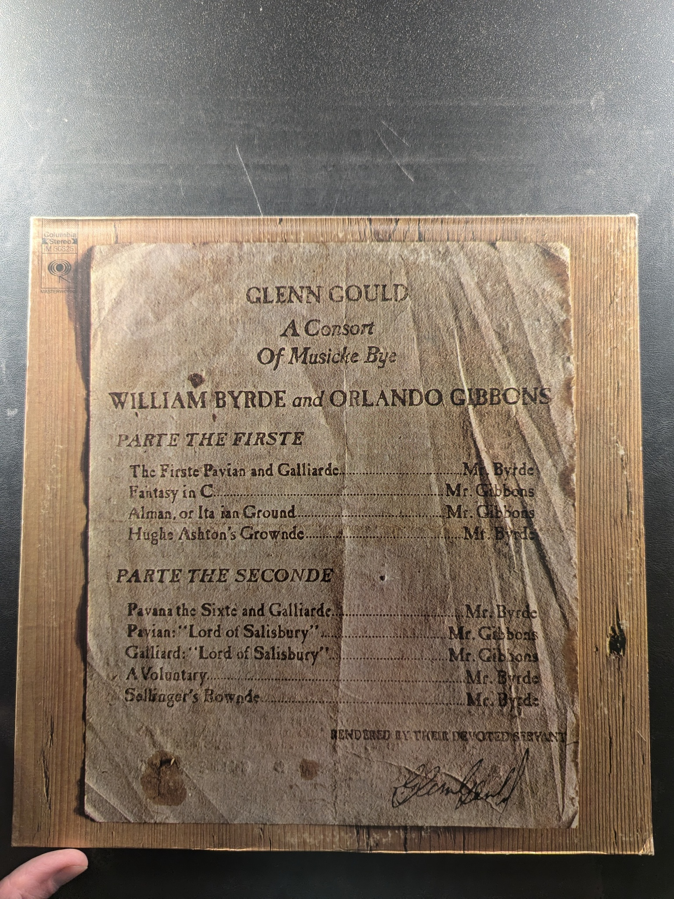
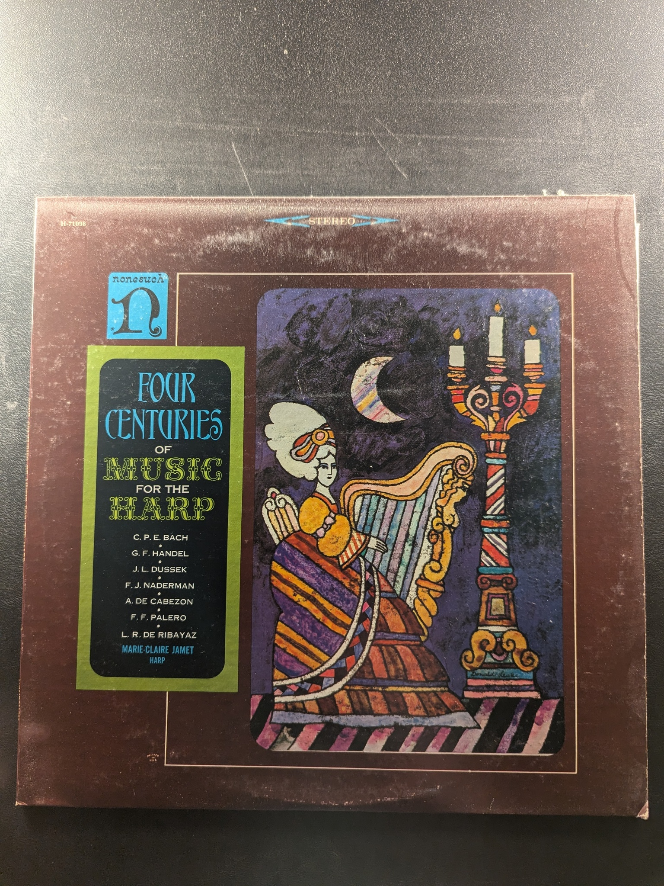

The Goldberg Variations
Glenn Gould
CBS Records Masterworks
Bach: Preludes, Fughettas and Fugues
Glenn Gould
CBS Masterworks 35899
A Consort of Musicke Bye William Byrde and Orlando Gibbons
Glenn Gould
Columbia Masterworks M 32225
Bach: The French Suites, Vol. 2 Nos. 5 and 6 / Overture In The French Style
Glenn Gould
Columbia M 32853
Hindemith: The Piano Sonatas Complete Nos. 1, 2, and 3
Glenn Gould
Columbia Masterworks
The Well-Tempered Clavier, Book 2: Preludes and Fugues 1-8
Glenn Gould
Columbia Masterworks M2L 310
The Well-Tempered Clavier, Book 2: Preludes and Fugues 17-24
Bach/Glenn Gould
Columbia M2S 728
Bach: The French Suites Vol. 1, Nos. 1-4
Glenn Gould
Columbia Masterworks M 32347
Bach Toccatas Vol. 2
Glenn Gould
CBS Records M 35833
Bach Toccatas Vol. 1
Glenn Gould
Columbia Masterworks M 35144
Piano Sonatas, Op. 31, Complete
Glenn Gould
Columbia Masterworks M 32349
Prelude to 'Lohengrin' / Siegfried Idyll / 'Tannhauser' Overture and Venusberg Music
Bruno Walter Conducts Wagner
Columbia Masterworks MS 6010
Streichsextett Nr. 1 B-Dur Op. 18
Johannes Brahms
Deutsche Grammophon 139 353
The Well-Tempered Clavier, Book 2: Preludes and Fugues 9-16
Bach, Glenn Gould
Columbia MS 7283
The Well-Tempered Clavier, Book 1: Preludes and Fugues 9-16
Bach, Glenn Gould
Columbia Masterworks ML 5188
The Well-Tempered Clavier, Book I: Preludes and Fugues 1-8
Bach/Glenn Gould
Columbia MS 6408
Twelve Sonatas
Igor Kipnis
Angel S-37310
The Well-Tempered Clavier, Book 1/Preludes and Fugues 17-24
Glenn Gould
Columbia MS 6776
French Suites
Thurston Dart
L'Oiseau-Lyre SOL 60039
Switched-On Bach II
Walter Carlos
Columbia Masterworks M 32659
The Glory of the Harp
Marie-Claire Jamet
The Musical Heritage Society Inc. MHS 1665
The Partitas for Harpsichord No.1 in B flat/No.2 in C minor
Igor Kipnis
Vox S-36807
The French Harpsichord School
Laurence Boulay
The Musical Heritage Society Inc. MHS 1083
Monty Python Live! At City Center
Monty Python
Arista AB 4073
Four Centuries of Music for the Harp
Marie-Claire Jamet
Nonesuch H-71098
{kind=link}
{kind=link}
{kind=link}
{kind=link}
{kind=link}
{kind=link}
{kind=link}
{kind=link}
{kind=link}
{kind=link}
{kind=link}
{kind=link}
{kind=link}
{kind=link}
{kind=link}
{kind=link}
{kind=link}
{kind=link}
{kind=link}
{kind=link}
{kind=link}
{kind=link}
{kind=link}
{kind=link}
{kind=link}